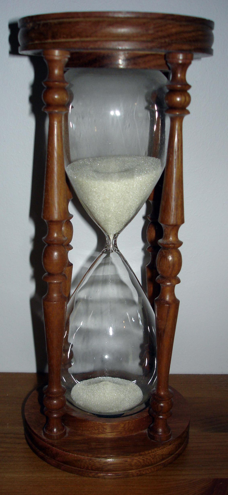

Recupera el teu temps.
Una pausa abans del scroll: ScrollOff t’atura un segon abans d’obrir TikTok, Instagram o YouTube. En aquell segon, decideixes tu.
Toca «Obrir» i mira què passa.

Abans d’obrir TikTok
Això t’acosta a qui vols ser avui?
Quant de temps?
Quantes hores al dia?
53dies l’any
3,5 h al dia × 365 dies ÷ 24 h = 53 dies sencers l’any.
No et passa només a tu.
1 de cada 3
adolescents a Espanya fa un ús problemàtic d’internet i de les xarxes. UNICEF Espanya, 2021 · 50.957 alumnes d’ESO
+100
vegades al dia mira el mòbil un adolescent, de mitjana. Common Sense Media, 2023
237
notificacions al dia o més rep la meitat dels joves. Common Sense Media, 2023
+2/3
dels joves diuen que, a vegades o sovint, els costa deixar el mòbil. Common Sense Media, 2023

Com funciona
Primer, tries quines apps et roben temps.
Després, obres TikTok sense pensar-hi.
Abans d’obrir TikTok
Cada minut aquí és un minut que no vas triar tu.
I llavors decideixes tu.
Tancar
+1 Xcape resistit, i la ratxa segueix.
Entrar 15, 20, 25 o 30 minuts
Un minut abans d’acabar et salta un avís. Després, ScrollOff torna.
Un toc quan et passes.
En arribar a 1, 2 i 3 hores en una mateixa app, ScrollOff t’envia una frase per fer-te pensar.
21:47
Què diria la teva mare si veiés que portes 2h a Instagram?
Avisos desactivats. Es tornen a activar a Perfil.
De moment, només a Android.
Canvia l’app i les hores per veure-ho.
Busca una funció
L’Xcape
Inici
Rutines
Mode Focus
La teva setmana
Reptes amb amics
Assoliments
Esborrar les meves dades
Cap funció amb aquest nom.
Recupera’l per a això.
Bunkers del Carmel, Barcelona.
Preguntes
És gratis?
Llegeix els meus missatges o el que miro?
Funciona a iPhone?
Puc entrar igualment a una app?
Cal fer-se un compte?
On van les meves dades?
Qui l’ha fet?
Recupera el
teu temps.
Demana l’enllaç de les proves d’Android, o que t’avisem quan arribi a iPhone. S’obrirà el teu correu amb el missatge ja escrit.